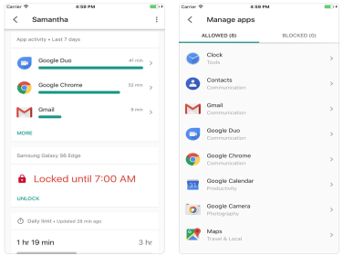

App That Helps Parents Track Their Kids Digital Activities
Family Link is an important service from Google that enables parents to help their kids and teens build safe and productive digital habits and make informed decisions online.
....
Family Link offers a non-intrusive form of parental control where parents get to supervise their kids' activities online and create Google accounts for them with access to Gmail, Maps, Calendar and several other Google services. Family Link requires that both parents and kids install Google Family Link app on their devices. Once the installation is done and everything is configured, parents will be able to do the following:

"1- Guide them to good content
View their activity - Not all screen time is the same. Help your child make healthy decisions about what they do on their Android device, with activity reports showing how much time they’re spending on their favorite apps.
Manage their apps - Handy notifications let you approve or block apps your child wants to download from the Google Play Store. You can also manage in-app purchases, and hide specific apps on their device.
Feed their curiosity - It can be hard to figure out what apps are right for your child, so Family Link shows you teacher-recommended apps on Android that you can add directly to their device.
2- Keep an eye on screen time
Set limits - It’s up to you to decide the right amount of screen time for your child. Family Link lets you set time limits and a bedtime for their supervised devices, so you can help them find a good balance.
Lock their device - Whether it’s time to go play outside, have dinner, or just spend time together, you can remotely lock a supervised device whenever it’s time to take a break.
April 13 2019
Positive Effects of Technology on Education
Modern technologies take an important role in our lives. But discussions upon the role of technology in education continue to appear even in the most modern and developed educational institutions.
....
Are the newfangled tablets and smartphones helping children learn or their function is only to entertain? Let's find it out.
1. Access to a huge informational background
The Internet connects people, thereby it can be used as an effective tool for gaining knowledge. Web users need only to enter specific information they want to find into search engines that will prompt them to millions of search results. There are several informative websites and web directories that offer information on a variety of topics. Students can use the Internet to get all the additional information they need to expand their knowledge base. A great example of an efficient use of world wide web for learning is academic assistance, that is currently being delivered worldwide. You can easily get custom writing help from CustomWriting.com and lots of other websites if struggling with homework.
2. Absence of geographical and political boundaries in social networks.
Nowadays, citizens of different countries in the virtual world share their opinions, thoughts and communicate with no limits. Any user of this environment can safely discuss his thoughts and questions, talk to virtual friends about his problems, which cannot be shared with his family members or offline friends. In a broader spectrum, users of these social networks can exchange opinions about the programs and policies of their own government.